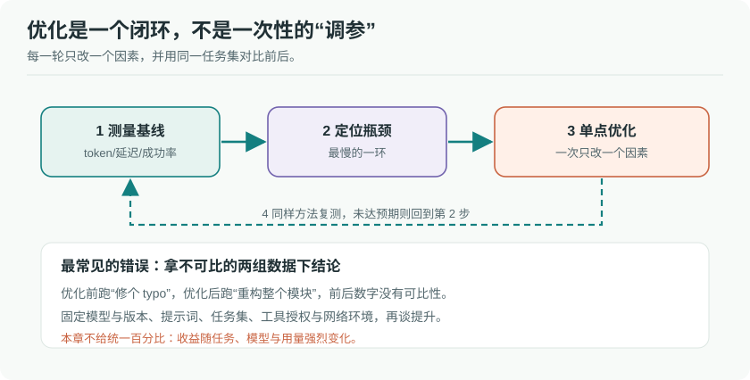
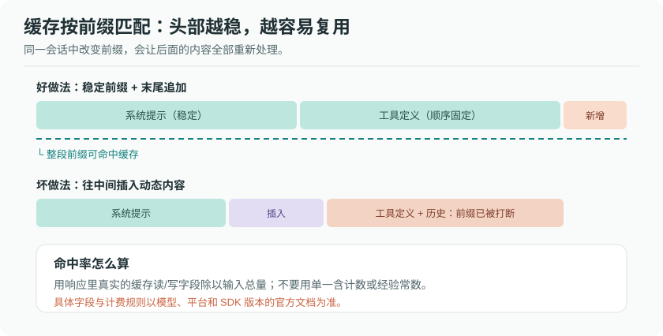

性能优化：先测量，再让请求更少更稳
用可复现的方法降低 token、延迟与成本：前缀稳定的缓存、按依赖并行的工具、分级模型与谨慎的温度调优。
优化从测量开始：四步闭环
优化不是“调参”，而是一个闭环：
- 测量基线：每任务 token、平均延迟、成功率、成本。
- 定位瓶颈：API 慢、工具阻塞、还是上下文膨胀（用第 23 章的工具）。
- 单点优化：一次只改一个因素。
- 同样方法复测：达不到预期就回到第 2 步。

Prompt Caching：前缀稳定才有效
缓存的工作原理是前缀匹配：相同前缀可被复用，避免重复处理。三条实用原则：
- 系统提示保持稳定：把稳定的核心规则与可变的“当前任务”拆开，动态部分放进用户消息。
- 工具定义固定在头部且顺序不变：不同回合改变工具排列会让前缀失效。
- 不在会话中间向前插入消息：中间插入会打断前缀。

“92% 命中率”不是官方常数
旧稿声称默认 40–50%、目标 85%+、某个项目从 45% 跳到 92% 并把年成本从 $12,000 降到 $3,600。这些数字缺乏可复核的版本化证据，本章改成用真实 usage 字段计算命中率的方法。
按依赖并行工具调用
官方 Tool Use 契约允许单次响应返回多个 tool_use block（见官方 handle-tool-calls）。Harness 可以在同一轮并行执行互不依赖的调用，并在一条 user 消息里回传全部 tool_result。
关键是依赖检测：若调用 B 的参数引用了调用 A 的结果，就必须串行。一个简单的安全策略是：
- 只对纯读操作默认并行；
Write/Edit同文件的写操作保持串行，避免竞态。 Bash之间可能有隐藏状态依赖，默认串行或显式声明安全。- 并行失败要能局部报错，不让一个异常吞掉整批结果。
async def run_batch(calls, registry):
# 只并行纯读且无相互依赖的调用
reads = [c for c in calls if registry[c["name"]].readonly]
writes = [c for c in calls if not registry[c["name"]].readonly]
out = list(await asyncio.gather(*(run(c) for c in reads),
return_exceptions=True))
for c in writes: # 写入串行，保持顺序
out.append(await run(c))
return out收益取决于任务里有多少可并行读与网络/IO 时延，不是固定百分比。
按任务分级选择模型
最常见的浪费是所有场景都用最强模型。分级策略（escalation）先试图用更小、更快的模型，失败或复杂度超限再升级：
| 任务类型 | 建议策略 | 理由 |
|---|---|---|
| 信息汇总、路径解析、日志摘要 | 小模型优先 | 不需要深度推理 |
| 格式化、简单 CRUD | 小模型 + 失败升级 | 出错后再上强模型 |
| 架构决策、根因分析、复杂重构 | 直接用强模型 | 推理深度不够会反复试错 |
具体型号、价格倍率与能力对比随版本变化，不应写死。请用你自己的任务集测量“升级阈值”：多数简单任务在哪个模型上就能过、哪些必须升级。
温度参数：别默认等于“确定性”
直觉上，写代码应该用温度 0——不要“创意”，要稳定输出。但温度 0 不等于绝对确定性：它只把采样变成 argmax，当多个候选对数接近时，仍可能稳定地选到并非最优的那个。
因此务实的做法是：先保证提示清晰、任务边界明确，再考虑微调温度，并且用你自己的任务集测量不同温度下的成功率，而不是照搬别人的数字。
旧稿的温度对照实验已移除
旧稿给出“温度 0 / 0.1 / 0.3 / 0.5–0.7 对应 82% / 87% / 84% / 65–72% 成功率”这类具体数字，不可核实，本章不再引用。温度可行区间与默认值还取决于具体模型，应以官方文档为准。
端到端优化清单（教学示例）
与其给一组无法核实的“优化前/后”数字，不如给一份可直接执行的清单。对每个候选优化，记录同一任务集前后的同一指标：
| 方向 | 改什么 | 先测量什么 |
|---|---|---|
| 缓存 | 稳定系统提示、固定工具顺序、动态内容移到末尾 | 输入总量与缓存读/写字段 |
| 并行 | 纯读并行、写操作串行 | 墙钟延迟与工具调用次数 |
| 模型分级 | 小模型优先、失败升级 | 任务成功率与单任务成本 |
| 上下文裁剪 | 截断/摘要冗余工具结果 | 后续回合的输入 token |
各项收益常互相重叠（例如减少输入同时影响缓存与成本），因此不要把它们简单相加，更不要声称“合计 100% 以上”。先在可复现任务集上干净地度量单项，再组合。
离线测试与练习
运行 python3 -m unittest discover -s examples -p 'test_*.py'，并给并行执行器写一组小测试：互不依赖的只读调用能并发；引用前一个结果的调用被串行；单个工具抛异常不会让整批失败。
官方资料与被移除的数据
- Anthropic: Prompt Caching — 前缀匹配与 usage 字段
- Anthropic: Handle tool calls — 单响应多个 tool_use 与并行处理
- Anthropic: Context Editing — 清理冗余工具结果
图 1、图 2 与文中阈值/策略为教学示例；本章不含某次真实计费或 benchmark 数据。具体单价、模型与温度默认值以官方文档为准。